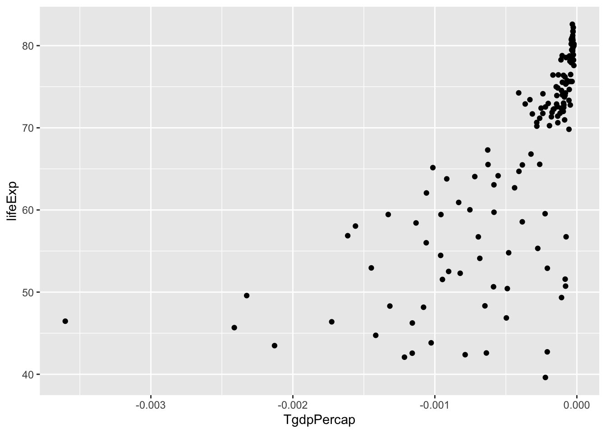
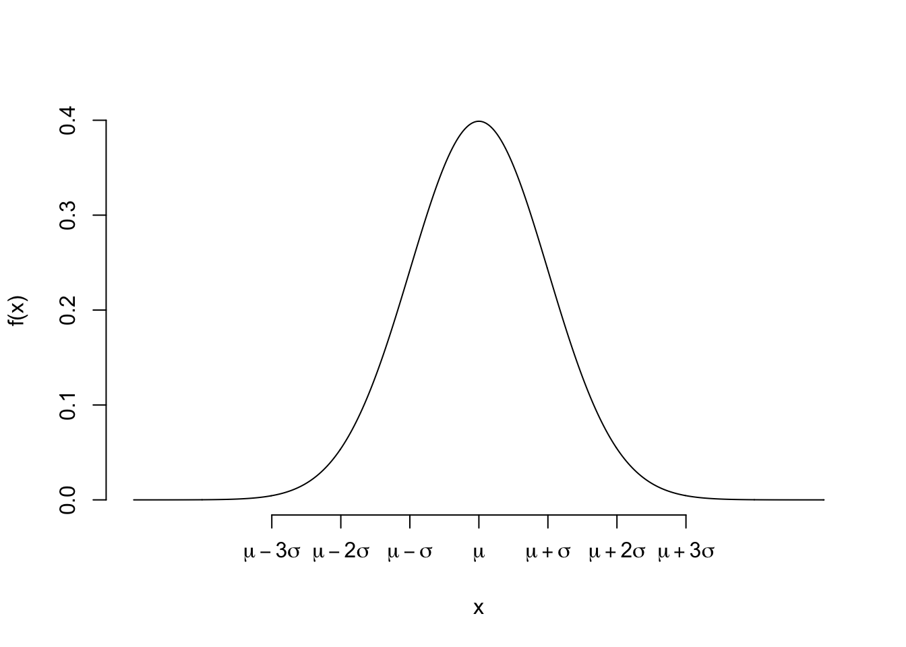
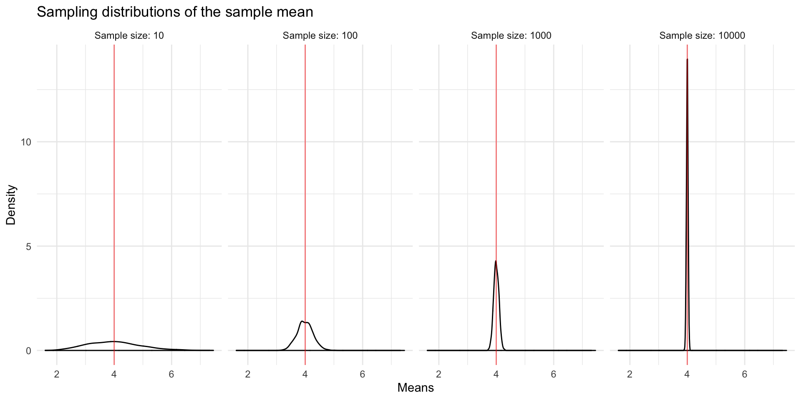
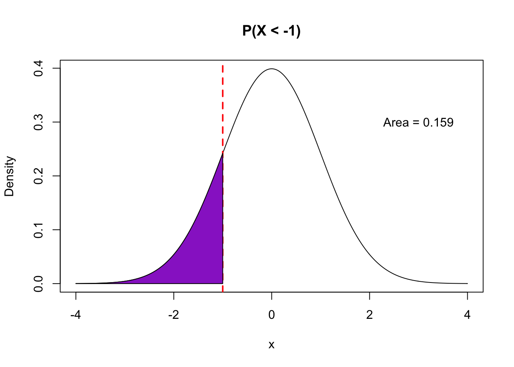
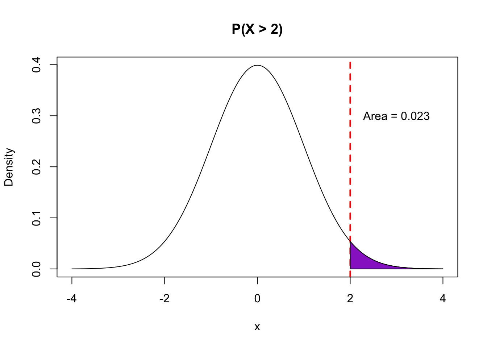

5.4 Probability Models
A probability model for a random variable \(X\) gives the possible values of \(X\) and the associated probabilities.
- What is the probability model for \(X\): the number of heads in 3 coin flips?
\(P(X = 0) = P(\text{three tails}) = 0.5^3\) (using Rule 5: independence)
\(P(X = 1) = P(\text{HTT or THT or TTH }) = 3*0.5^3\) (using Rule 4: disjoint events & Rule 5)
\(P(X = 2) = P(\text{HHT or HTH or THH }) = 3*0.5^3\) (using Rule 4 & 5)
\(P(X = 3) = P(\text{three heads}) = 0.5^3\) (using Rule 5)
- What is the probability model for \(Y = 3*X\)? (The total number of dollars earned when $3 is paid for each head.)
\(P(Y = 0) = P(\text{three tails}) = 0.5^3\)
\(P(Y = 3) = P(\text{HTT or THT or TTH }) = 3*0.5^3\)
\(P(Y = 6) = P(\text{HHT or HTH or THH }) = 3*0.5^3\)
\(P(Y = 9) = P(\text{three heads}) = 0.5^3\)
- What about \(Z\)? (The number of heads on the last of the 3 coin flips)
\(P(Z = 0) = P(\text{HHT or TTT or HTT or THT}) = 4*0.5^3 = 0.5\) (using Rules 4 & 5)
\(P(Z = 1) = P(\text{HHH or TTH or HTH or THH}) = 4*0.5^3 = 0.5\) (using Rules 4 & 5)
For most situations in our class, we won’t use the probability rules to calculate chances by hand. Rather, we will use a named probability model such that the we can calculate probabilities for particular values of the random variable using either:
- a probability mass function (pmf) (finite number of possible values) or
- a probability density function (pdf) (infinite number of possible values)
5.4.1 Using probability mass functions
Let’s say that we are working with a random variable \(X\) that represents the result of spinning the arrow on a spinner that has 3 regions labeled 1, 2, and 3. \(X\) can only takes the values 1, 2, or 3. The probability mass function (pmf) for \(X\) gives the probabilities that \(X=1\), \(X=2\), and \(X=3\) which are determined by the relative areas of the regions on the spinner. The pmf for \(X\) is frequently denoted as \(p(x)\), which is shorthand for \(P(X = x)\). Based on the construction of our spinner, the pmf can be denoted as below:
| \(x\) | 1 | 2 | 3 |
|---|---|---|---|
| \(p(x)\) | 0.4 | 0.5 | 0.1 |
The first row indicates the values that \(X\) can take. The second row indicates the associated probabilities, the values of the probability mass function. Note that this row adds up to 1 because one of these 3 outcomes must happen.
We can use the pmf and the probability rules introduced earlier to calculate probabilities of different events.
Example 1: \(P(X = 1 \text{ or } 2)\)
Because the events \(X = 1\) and \(X = 2\) are disjoint (mutually exclusive/can’t happen simultaneously), this probability is equal to \(P(X = 1) + P(X = 2) = 0.4 + 0.5 = 0.9\). (Rule 4)
Example 2: \(P(X \neq 1)\)
By Rule 3, \(P(X \neq 1) = 1 - P(X = 1) = 1 - 0.4 = 0.6\). Another way to arrive at this would be to see that \(P(X \neq 1) = P(X = 2 \text{ or } 3) = P(X = 2) + P(X = 3) = 0.5 + 0.1\).
5.4.2 Using probability density functions
When a random variable can take infinitely many values (i.e. a quantitative variable), using a probability mass function will not work because we would have to specify infinitely many probabilities. A probability density function (pdf) serves an analogous role to probability mass functions but works for quantitative variables that can take infinitely many values.
We have looked at density plots previously when we learned about data visualization. These were smooth curves that showed us the distribution of quantitative variable. In this class, the probability density functions that we will look at will be smooth curves. An example of a pdf for a famous named probability model (called the Normal distribution) is shown below:

There are two main ideas that you should be comfortable with when working with quantitative random variables:
- With a quantitative random variable \(X\), we are interested in the probability that \(X\) falls in a certain range. Examples include \(P(X > 3), P(X < -5), P(-1 < X < 1)\).
- The calculation of such probabilities is achieved by looking at areas underneath the probability density function within that range.
The pictures below illustrate how different probability statements correspond to different areas beneath the pdf curve.

5.4.3 Expected value and variance
Two important properties of a random variable \(X\) are its expected value and variance.
The expected value of a random variable is a real number and gives a measure of the typical value that the random variable takes or the long-run average if you could repeat the random process many times. For a mathematical definition, you can look at the probability appendix in these notes. Generally speaking, an expected value is a weighted average of the values that the random variable can take. If, for example, \(X\) has a very high probability to take the value 9, then 9 will be weighed more heavily in the average.
Why do we care about expected value? Remember that the random variables that we will be concerned with are quantities such as estimated slopes from linear regression. This estimated slope is a (quantitative) random variable because its value depends on the random sample that we drew. Because it is a random variable, it has an associated probability density function which tells us how this estimated slope would vary across different samples of the same size. This distribution is called a sampling distribution, and expected value tells us the mean (center) of this distribution. When we take simple random samples from the population, the expected value is usually equal to the true target population value that we are trying to estimate from our sample. This is a powerful idea because the estimate we compute from modeling is, on average, correct.
The variance of a random variable is very much related to the variance of a set of numbers that was introduced as a measure of spread/variation/variability. Recall that variance as a measure of spread is approximately the average of the squared distances of each data point to the mean. The variance of a random variable follows in very much the same spirit. It gives the average squared distance of the random variable from its expected value. The variance of a random variable, like the variance of a set of numbers, measures how spread out the values of the random variable could be. The standard deviation of a random variable is the square root of the variance.
Why do we care about the variance of a random variable? The spread of the sampling distribution is measured by the variance of the associated random variable. If the sampling distribution is very spread out, then our estimates could be all over the place from sample to sample. This means that there is a lot of uncertainty in our estimate. For example, we may have estimated a slope of 3 from our linear regression model, but that slope could easily have been 7 or -2 depending on our particular sample. The variance of an estimated regression slope quantifies how much our estimate could vary from sample to sample, which will allow us to give reasonable margins of error on our estimates.
Wait! These ideas are fine in theory…but how do we actually use them? It turns out that a lot of the random variables that we’ve worked with so far come from named probability distributions that allow for theoretical calculations of expected value and variance. This theory means that we don’t have to go out and collect sample after sample to get a sense of sampling variability. Statistical theory gives us a way to understand/approximate how our estimates vary from sample to sample just from mathematics. This is based on theoretical probability rather than on bootstrapping which was giving us the same type of information but through empirical probability.